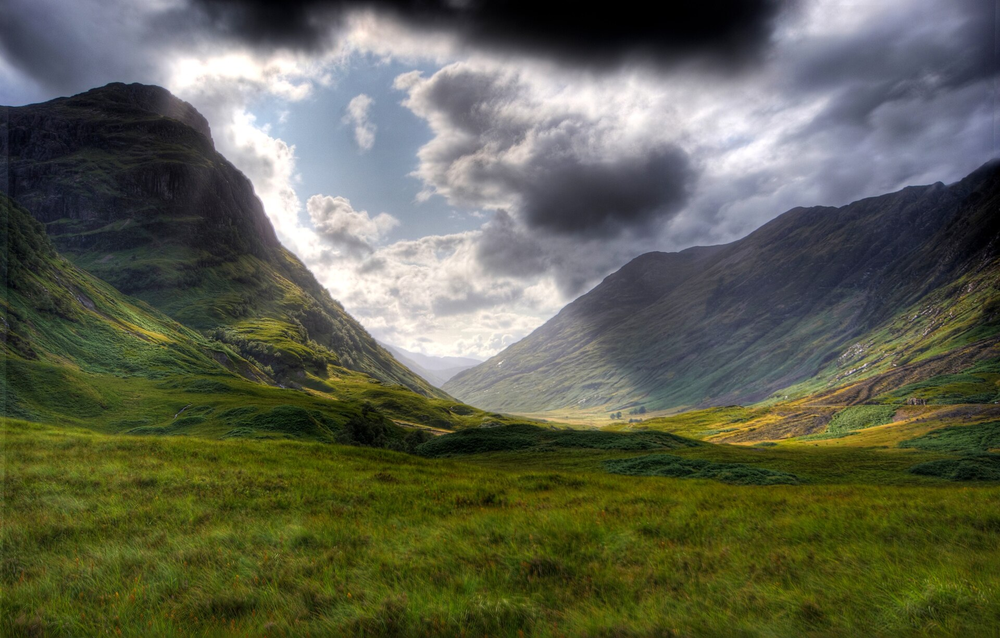
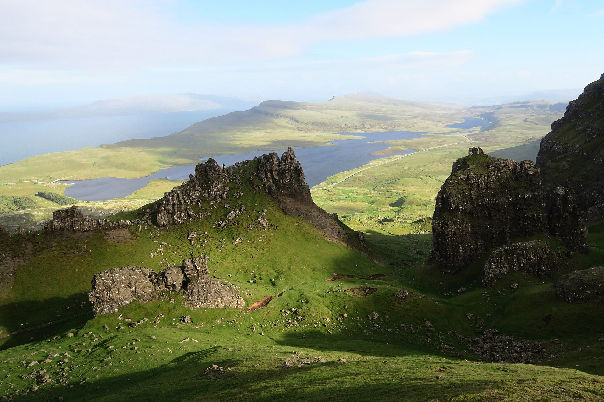

一套书卷衬线承担标题与正文，等宽字体只做铭牌与日期；汉字正文每行约三十四字，读起来不催不赶。
正文使用衬线字体，行高 1.9，每段不超过五行。颜色取雾白降一档灰度，长时间阅读不刺眼；段落之间留足呼吸，不画分隔线。
一篇特写占据整幅视宽，其余以台账行列出：日期靠左、标题居中、标签靠右，不再均等摆卡片。

正文严格锁在六十八字符宽的书页里，目录与耗时挂在左侧不挡视线；图片说明写在图外，不再压在照片上。
复古蓝调不是把照片泡进蓝色里，而是让阴天拿出它本来的样子：绿色退半步，石头和水面的冷灰走到台前，整张照片安静下来，像一张放了很久的明信片。站点里的每一张照片都走同一条校色链，页面才不会看起来像拼贴。
校色只有三条约束：降饱和、压亮度、罩一层保留明暗的蓝色。饱和度与灰度负责褪去生的绿，蓝色用混合模式只取色相不动明暗，最后底部的压暗渐变给标题一个可靠的着落点。

整条链路收在三个变量里，切档时只有滤镜的透明度在过渡，照片本体不动：
/* html[data-grade] 三档切换 */ --g-sat: 0.58; /* 饱和度 */ --g-gray: 0.16; /* 灰度化 */ --g-tint: 0.48; /* 蓝罩浓度 */
留白也是一种颜色。段落之间不画线，章节之间只留空气；需要分界的地方，一条 9% 透明度的发丝线就够了。
全站只有这一张色板：三层夜蓝打底，雾白写字，烟灰退后，黄铜做唯一强调，钢蓝留给代码。